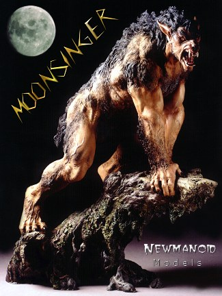

Model: Moonsinger
Scale: 1/6 (14 inches tall, 7 lbs)
Material: Cold Cast Porcelain
Produced by: Newmanoid Models
List Price: $145.00 (plus $10 S&H within the U.S.)
Sculpted by: Mark Newman
Updated: Nov 21 21:29 1996
|  |
You may have heard the buzz about this Bad Boy, Well he's due to
arrive and ready to ship December 1996!
Newmanoid Models is now taking pre-orders. There are only 250 kits in this first shipment and they will go fast. If you would like a low numbered kit, send in your order today and we'll put you on the First one's to ship list.
Enclosed you'll find the order form. Fill it out and send it in
with your check or money order ASAP and you have just secured your
own Moonsinger is a 4 piece solid cold cast porcelain kit. He measures 14 inches tall and weighs 7 lbs. The casting is actually the best quality so far and we at Newmanoid Models are sure you'll be impressed. Don't be left out act fast!
Thanks for your interest, |
The Gremlins in the Garage webzine is a production of Firefly Design. If you have any questions or comments please get in touch.
Copyright © 1994-1997 Firefly Design.